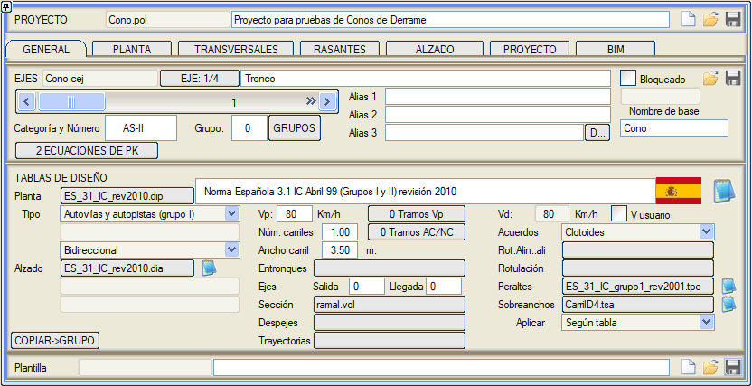
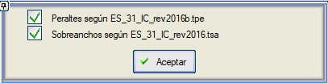
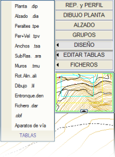
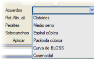

Bu sekmeden her bir güzergaha tasarım standartları tabloları, proje ve tasarım hızları atamak, proje hızlarını güzergah boyunca farklı kesimlere ayırmak vb. mümkündür.
Her güzergah için adı (bu veri GÜZERGAH (PLAN) ekranında da görülebilir ve raporlarda gösterilir) görüntülenir ve üç adede kadar ek takma ad verilmesine izin verilir. Ayrıca, ilgili düşey işaretlemelerde kullanılacak bir kategori ve numara da eklenebilir.
Grup kutucuğunda, güzergahın ait olduğu grup tanımlanabilir/değiştirilebilir. Ayrıca [GRUPLAR] diyalog kutusuna bir erişim mevcuttur.
Bir güzergah kilitli olarak işaretlenebilir (GRUPLAR menüsünden de güzergahlar kilitlenebilir). Kilitli bir güzergah seçilebilir, ancak geometrisini değiştirmek mümkün değildir.
Programın o güzergahla ilişkili farklı dosyaları adlandırmak için kullanacağı bir temel ad atanabilir.
GRUBA > KOPYALA kutucuğu ile, mevcut güzergahla aynı gruptaki tüm güzergahlar için TASARIM TABLOLARI kutusundaki tüm veriler kopyalanır, ancak şu veriler hariç: AC/NC Kesimleri ve Çıkış ve Varış Güzergahları, çünkü bu veriler her güzergah için özeldir.

Bu veriler, tasarım tablolarıyla birlikte, bir yorum eklenebilen ve aşağıdaki işlemlerin yapılabildiği bir tasarım şablonu oluşturur:

|
Farklı tasarım tablolarının adlarını sıfırlar.
|

|
Mevcut güzergah için kullanılan farklı tasarım tablolarının adlarını içeren bir .dig dosyası kaydetmeyi sağlar. Çalışma dizinine bir dosya ve birincil kütüphaneye bir kopya kaydedilir.
|

|
Bir .dig dosyasından tasarım tablolarının adlarını okumayı sağlar. .dig dosyaları kütüphanelerde aranır. |
Şablonlarda ayrıca aşağıdaki veriler de saklanır:
- Güzergah (plan) tasarım tablosunda kullanılan tip ve alt tip.
- Güzergahın tek yönlü mü yoksa çift yönlü mü olduğu ve hangi yönde ilerlendiği (tek yönlü, ters tek yönlü veya çift yönlü), bu durum örneğin bazı yönetmeliklerde özgül hızın hesaplanmasını etkiler.
- Demiryollarında, kategori ve mod.
- Boykesit tasarım tablosunda kullanılan tip ve alt tip.
- Genişletme (ek şerit genişliği) tablosunun uygulama modu.
- Proje hızı.
- Tasarım hızı ve bunun kullanıcı tarafından tanımlanıp tanımlanmadığı.
Eğer güzergahın plan tasarım tablosunda, proje hızı VD veya Vp komutlarıyla önceden belirlenmişse, güzergah için proje hızı, kesimlere göre veya her bir güzergah elemanı için zorunlu olarak değiştirilemez.
- Şerit sayısı (dever ile dönen). Eklediğimiz her güzergah için varsayılan değer 1'dir.
- Her şeridin genişliği. Eklediğimiz her yeni güzergah için varsayılan değer 3.5m'dir.
Bu yeniliğin eklendiği 2013'ten önceki projelerin güzergahları için bu bilgi tasarım tablosundan çıkarılır, örn. AC=7 ise sırasıyla 2.0 ve 3.5 olarak ayarlanır. Bir güzergah için .dip tablosu veya yol tipi değiştirilirse, bu değerler belirtilen tip için tablodan yeniden çıkarılır. Bu değerler ISTRAM tarafından dever geçişlerinde gerekli uzunlukları hesaplamak için klotoid tasarımında kullanılır. Ve ayrıca genişletme hesaplamaları için temel veri olarak kullanılır. Bazı yönetmeliklerde bu hesaplama genişlikleri, şerit sayısına bağlı katsayılardan etkilenebilir.
Şerit sayısını ve şerit genişliğini kesimlere göre tanımlama imkanı.
- Plandaki güzergah elemanlarının birleşim (geçiş eğrisi) tipi.
- VIRTUAL 3D modülü için kullanılan stil. Bu stil, V3D Stili'nin sağ tarafında bulunan ok kutucuğuna tıklanarak sonraki tüm güzergahlara aktarılabilir.
Kullanıcının hizmetine sunulan farklı şablonlar mevcuttur: zanja.dig (gömülü bir boru hattı tasarımı için) ve autovia.dig ile ramal.dig (karayolu tasarımı için)...
Tasarım Standartları, Hızlar ve Geçiş Eğrileri
GENEL sekmesi, projeye ait her bir güzergahla ilişkili farklı tasarım standartları tablolarını bir araya getirir.  simgesiyle düzenlenebilen çeşitli tablolar yüklenebilir: simgesiyle düzenlenebilen çeşitli tablolar yüklenebilir:
- Güzergah (Plan) Tasarımı (.dip): Her ülkenin veya idarenin karayolu yönetmeliğini tanımlar. Uygulama, bu bilgiyi kullanarak kullanıcıya her projenin teknik şartnamelerine uymasında yardımcı olur, her bir güzergah elemanı için yarıçaplar ve klotoid parametreleri önerir ve tüm güzergahı doğrulayarak tespit edilen hataları bildirir. Demiryolları için bir plan tasarım tablosu yüklendiğinde, Vd değeri yerine tablodan okunan Vmax değeri gösterilir. Eğer bu değer tabloda yorum satırı olarak belirtilmişse, o zaman Vmax=Vp olarak ayarlanır.
Eğer atanan plan tasarım tablosu bir demiryolu güzergahı içinse, diyalog kutusu aşağıdaki gibi görünür:

Atanan tasarım tablosuna bağlı olarak, program Güzergah (Plan) sekmesinde geliştirilecek güzergahın KARAYOLU, DEMİRYOLU, BORU HATTI olduğunu veya hiç bir tablo yüklenmemişse hiçbir şey göstermeyecektir.
Demiryolları durumunda, planda daha sonra bir değişiklik yapıldığında, program deverlerin tabloya (.dip) göre yeniden hesaplanıp hesaplanmayacağını seçme imkanı sunar, çünkü demiryolunda deverler bu plan tasarım tablosuna dahil edilir. Eğer seçenek işaretlenmezse, önceden kaydedilmiş deverler yeniden projelendirilir.
- Boykesit Tasarımı (.dia): Bu, BOYKESİTLER menüsünde, bu tasarım tablosunun verilerine dayanarak minimum ve istenen KV değerini ve diğer parametreleri bulmayı sağlar.
Yan yol (rampa) güzergahları için, yan yolun hangi güzergahtan çıktığını veya hangi güzergaha bağlandığını belirtmek için Güzergahlar kutucukları mevcuttur.
Kütüphaneye N_ES_07a.den tablosu eklenmiştir. Bu tablo her güzergah için buradan yüklenebilir ve katılma ile ayrılma şeritlerinin uzunluklarının tasarımı için parametreler ve tablolar içerir.
Kütüphanede, hız değiştirme şeritlerinin uzunluklarının hesaplanması için şeridin başlangıcındaki (nokta 1.5) eğim ile şeridin sonundaki (nokta C) eğim arasındaki ortalamayı kullanan bir komut içeren N_ES_07b.den kavşak tasarımı dosyası mevcuttur. Başlangıç noktasının konumu iterasyonla elde edilir, çünkü konumu şeridin uzunluğuna bağlıdır ve bu da o noktadaki eğime bağlıdır.
Şili kütüphanesinde CHILE_2013a.den tablosu mevcuttur. Bundan, 3.404.307 (2)A ve (3)B grafiklerine göre çift parabol şeklinde bir genişlik geçişi oluşturarak, paralel şeritli giriş ve çıkış şeritlerinin katılma ve ayrılma kollarını hesaplayan bir CHILE_2013b.den tablosu oluşturulur. Bu kolların son noktasındaki genişliği 1m'dir.
Şili kütüphanesinde 2021 Şili yönetmelik tabloları mevcuttur, dosyaların tümü CHILE_2021a*.* adındadır.
DIP ve TPE tabloları, %2, %2.5, %3, %3.5 çatı eğimi deverleri için versiyonlara sahiptir:
CHILE_2021a20.dip
CHILE_2021a25.dip
CHILE_2021a30.dip
CHILE_2021a35.dip
CHILE_2021a20.tpe
CHILE_2021a25.tpe
CHILE_2021a30.tpe
CHILE_2021a35.tpe
CHILE_2021a.den
CHILE_2021a.dia
CHILE_2021aSemitrail18m.tsa
CHILE_2021aSemitrail16m_a2x3.tsa
CHILE_2021aSemitrail16m.tsa
CHILE_2021aSemit16m_Curva.tsa
CHILE_2021aBus13m.tsa
CHILE_2021aCamion11m.tsa
Ayrıca, 350m veya daha küçük yarıçaplar için maksimum %5 dever ve %2.5 ile %3.5 çatı eğimleri olan yollar için DIP ve TPE tabloları da yayınlanmaktadır:
CHILE_CAMIN_PM.dip
CHILE_CAMIN_PM.tpe
- Her güzergah, farklı bir güzergah elemanlarını planda etiketleme modu (.ali) ile ilişkilendirilebilir. Böylece program, kendi etiketleme modunu tanımlamış bir güzergahı etiketleyeceği zaman bu moda geçer ve bu güzergah ile hiçbir şey tanımlanmamış sonraki güzergahlar için bunu kullanır.
- Genişletmeler (.tsa). Her güzergah için genişletme tablosunun uygulama tarafı, şu dört seçeneğe göre önceden tanımlanabilir: Planda bir değişiklik olduğunda, program, bir güzergahın uzunluğunun değişmesi nedeniyle genişletme tablosunun yeniden hesaplanıp hesaplanmayacağını veya mevcut genişletme verilerinin yeniden projelendirilmesi için işaretin kaldırılıp kaldırılmayacağını seçme imkanı sunar.

- Tabloya göre (tablo içindeki tanımı kullanır veya interaktif olarak sorar).
- Sağ taraf.
- Sol taraf.
- Her iki taraf.
Seçtiğimiz tablo yüklendikten sonra, simgesi aracılığıyla doğrudan düzenleyebiliriz.
- Tip Kesit (.vol). Kütüphaneye, tasarım tablosunda kesit olarak kullanılmak üzere autovia.vol, carretera.vol, ramal.vol ve zanja.vol örnek dosyaları eklenmiştir, ancak kullanıcı buraya yüklemek için kendi .vol dosyalarını tasarlayabilir.
- Deverler (.tpe). Her güzergah için dever uygulama tablosu önceden tanımlanabilir. Planda bir değişiklik olduğunda, program, bir güzergahın uzunluğunun değişmesi nedeniyle dever tablosunun yeniden hesaplanıp hesaplanmayacağını veya mevcut dever verilerinin yeniden projelendirilmesi için işaretin kaldırılıp kaldırılmayacağını seçme imkanı sunar.
Dever tablosunu yükledikten sonra, simgesi aracılığıyla doğrudan düzenleyebiliriz.
- Etiketleme (.rde). Her güzergaha etiketleme için özel bir tablo atanabilir.
- Taşıt Dönüş Analizi. Her güzergaha bir dönüş analizi hesaplaması yapmak için parametreleri ve aracı içeren bir .try dosyası bağlamayı sağlar. Bu .try dosyaları TAŞIT DÖNÜŞ ANALİZİ menüsünde tanımlanır.
Güzergahlarla ilişkili tüm tablolar, GENEL, GÜZERGAH (PLAN), BOYKESİTLER, ENKESİT (ALZADO) veya PROJE dikey yan menüsündeki [TABLOLARI DÜZENLE] seçeneğinden veya simgesinden düzenlenebilir ve bu ilişkilendirme her güzergah için .cej dosyasında saklanır.
Yürürlükteki İspanyol Karayolları Talimatı (3.1IC) 2015 revizyonu aşağıdaki tablolarda yer almaktadır (grup I, II ve III için geçerlidir):
- Güzergah (Plan) tasarımı: ES_31_IC_rev2016.dip
- Boykesit tasarımı: ES_31_IC_rev2016.dia
- Genişletmeler: ES_31_IC_rev2016.tsa
- Deverler: ES_31_IC_rev2016b.tpe
Bazı ülkelerde, proje hızından (Vp) farklı bir hız olan tasarım hızını (Vd) tanımlamak alışılmış bir durumdur. Bunun için kullanıcının K. hızı seçeneğini aktif etmesi ve bu hızı Vd alanında tanımlaması gerekir.
Ayrıca her güzergah için farklı proje hızına sahip farklı kesimler tanımlanmasına izin verilir ([Vp Kesimleri] butonu). Proje hızının bu şekilde kesimlere ayrılması aşağıdaki bölümlerde uygulanır:
- Klotoid önerisi.
- Yarıçap önerisi.
- Yönetmelik kontrolü.
- Kavşaklarda katılma ve ayrılma şeritlerinin uzunluklarının belirlenmesi.
Tanımlanan kesimlerin kapsamı dışında, güzergahın genel proje hızı uygulanır.
Güzergah plan tasarımında kullanılacak birleşim veya geçiş eğrileri ile ilgili olarak, program aşağıdaki tipleri kabul eder:
- Klotoid eğrisi, en yaygın kullanılan geçiş eğrisi olduğu için varsayılan olarak seçilen seçenektir.
- Yarım sinüs eğrisi. Bu eğrilerin uygulama alanı, çok büyük yarıçaplı ve küçük geçiş uzunluklarına sahip yüksek hızlı demiryolları ile sınırlıdır. Bu kapsam dışında bu eğriler uygulanamaz. Yarım sinüs eğrileri uzunlukları ve dairesel kurp yarıçapı ile tanımlanır.
- Kübik spiral, Y = X3 / 6RX denklemini izler; burada X, doğru-spiral noktasından spiral-kurp noktasına olan teğet mesafesidir.
- Kübik parabol: Aşağıdaki basitleştirilmiş formülasyonu kullanır:
- Toplam parabolün parametreleri:
X = L - L3/40R2
Y = (X2/6R) (1+(X/2R)2)1/3
tan(T) = 3Y/X
- Herhangi bir noktanın koordinatları:
x = l - l5/40R2L2
y = x3 Y/X3
tan(t) = x2 3Y/X3
r = R X/x
Burada:
X
Y
R
L
tan(T)
x
y
l
tan(t)
r
|
Parabolün teğet doğrusu üzerindeki toplam izdüşümü.
Kurp başlangıcından teğet doğrusuna dik mesafe.
Kurp yarıçapı.
Parabolün toplam uzunluğu. Tanım parametresidir (A).
Dairesel kurp başlangıcındaki teğet.
Eğri üzerindeki herhangi bir noktanın teğet üzerindeki izdüşümü.
Herhangi bir noktanın teğete dik mesafesi.
Herhangi bir noktanın teğetten itibaren uzunluğu.
Herhangi bir noktanın teğeti.
Herhangi bir noktadaki yarıçap.
|
- Bloss eğrisi: Özellikle hat düzeltmelerinde demiryolu güzergahlarında kullanılır.
- Demiryolları için Kosinüsoidal geçiş eğrisi tipi.
Enkesit ve ENKESİT (ALZADO) Menüsünün Davranışı
ENKESİT (ALZADO) menüsü aşağıdaki gibi davranır:
- Proje tablosunda tanımlı bir .vol dosyası olan güzergahlar için, bu dosya her zamanki gibi yüklenir.
- Proje tablosunda tanımlı bir .vol dosyası olmayan güzergahlar için program aşağıdaki şekilde bir tane oluşturabilir: Eğer bu güzergah için GENEL sekmesinde tanımlı bir kesit dosyası (.vol) varsa:
- Bu dosya yüklenir.
- İlk ve son arazi enkesitinin kilometreleri arasında bir hesaplama kesimi oluşturulur.
- Eğer tanımlı bir dever tasarım tablosu (.tpe) varsa, dever kanunu bu tabloya göre hesaplanır.
- Arazi boykesitinin ilk ve son noktası arasında bir kırmızı kot (proje kotu) hattı oluşturulur.
Bu şekilde, güzergahın ilk ön tasarımı için yeterli veri elde edilmiş olur.
GENEL sekmesinde kesiti tanımlamak için kullanılan .vol dosyaları, herhangi bir .vol dosyasıyla aynı formata sahiptir ve farklı güzergahlar tarafından kullanılabilmesi için kütüphanede saklanır.
Yüklenirken, dosyanın içerebileceği güzergah numarası dikkate alınmaz, bu şekilde .vol dosyasında tanımlanan kesit herhangi bir güzergah numarası için geçerli olabilir.
Açıklamalar
[A...] butonuna tıklayarak açıklamalar tablosuna erişiriz. Her güzergah, 150 karakteri geçmeyen 40 adede kadar açıklamaya sahip olabilir.
|